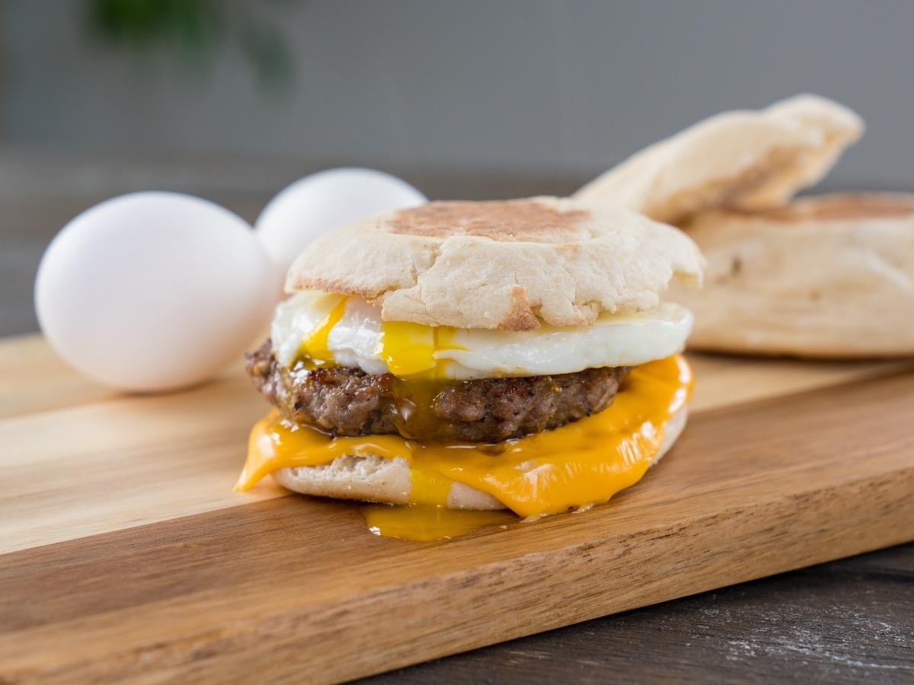

Classic English Muffin Sandwich

There may be no better bread vehicle for a breakfast sandwich than an English muffin. With its nooks and crannies that toast up just right and with a texture that stands up to ingredients but is not too tough or cumbersome to manage, it's pretty much the ideal.
Ingredients
- egg
- breakfast sausage
- cheese
- english muffin
Steps
- cook sausage patty
- break egg into pan, pop yolk, and use a spatula to pull the egg back into a roughly circular shape as close to the size of the muffin as possible as it cooks.
- place slice of cheese on sausage patty
- place cooked egg on top of sausage with cheese to help melting process
- toast and butter english muffin
- assemble and enjoy
History
The word muffin is thought to come from the Low German muffen, meaning "little cakes". While the first recorded use of the word muffin was in 1703, recipes for muffins appear in British cookbooks as early as 1747 in Hannah Glasse's The Art of Cookery. The muffins are described as being "like a Honey-comb" inside.
The Oxford English Dictionary also suggests a possible link to Old French moflet, a type of bread. Originally it meant "any of various kinds of bread or cake.
Home